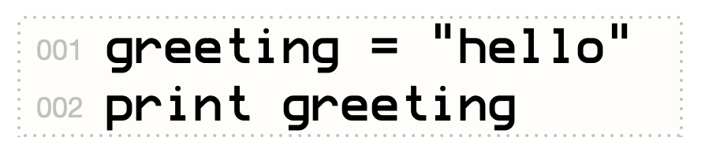
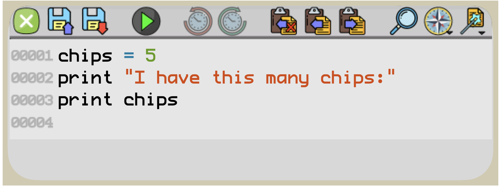

Sometimes you need to store something like a number or a message (called a string in computer jargon) to use later. In computer programming, you store such values in variables. A variable is like a little storage bin for a string, number, or other value.
Each variable has a name, and can store only one thing at a time. When you put a new value into a variable, any previous value stored there is thrown away.
Type the following two lines into Mini Micro, pressing Return or Enter after each one. (Don’t type 001 and 002; those line numbers are only printed in this book to make it easier to talk about the commands.)
Variables are how computers remember things! Once something is stored in a variable, it stays there until it is replaced by a new value, or cleared by the reset command.
So far, you’ve been typing commands at the Mini Micro prompt. Commands that you enter in this way are carried out immediately. But sometimes you want to list a whole bunch of commands, like a recipe for making a cake. In computers, such a recipe is called a program.
Mini Micro has a special kind of text editor (also called a code editor) for entering and editing programs. To get to it, type edit at the prompt and press Enter or Return.
The result looks like this, but empty:
Go ahead and type in the code shown above. Then click the green button to exit the code editor, and return to the Mini Micro prompt. Now to run your program, type run and press Return or Enter.
Try a longer one! Enter reset at the prompt to clear the last program, then edit to start a new one. Carefully type in the program at left. Press to exit the code editor, then run. What do you see?